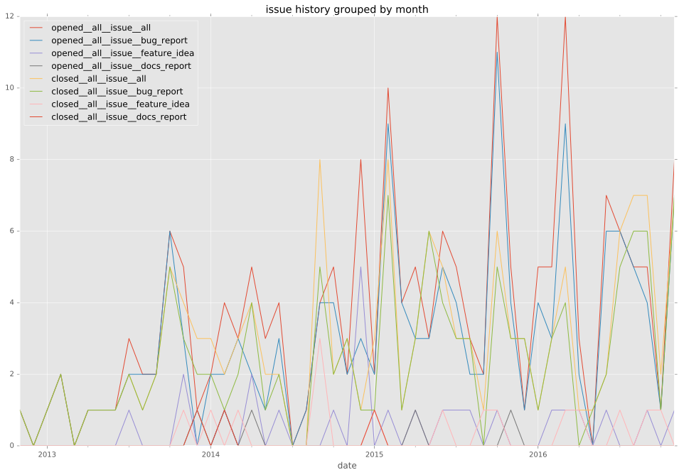
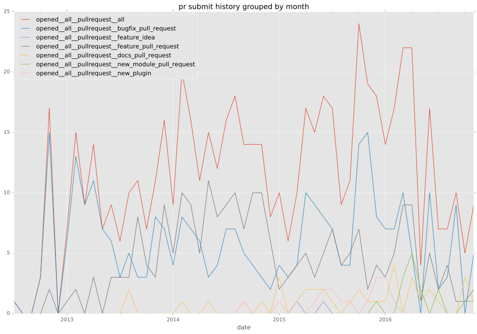
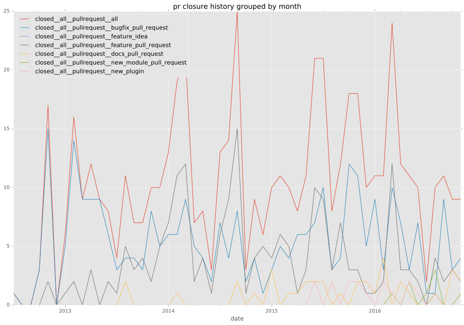
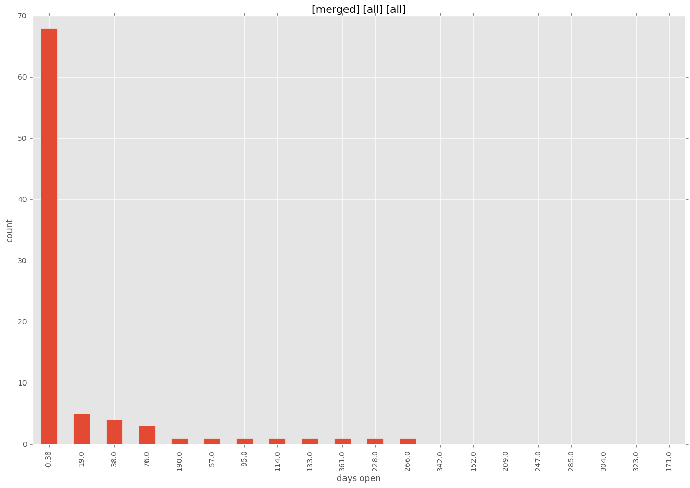
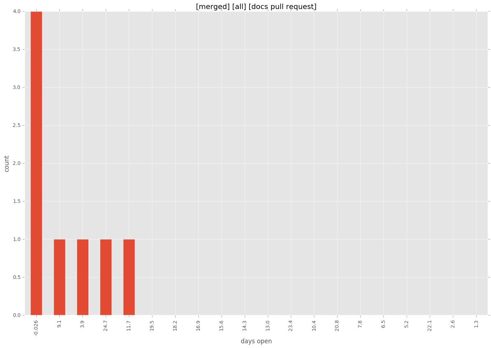
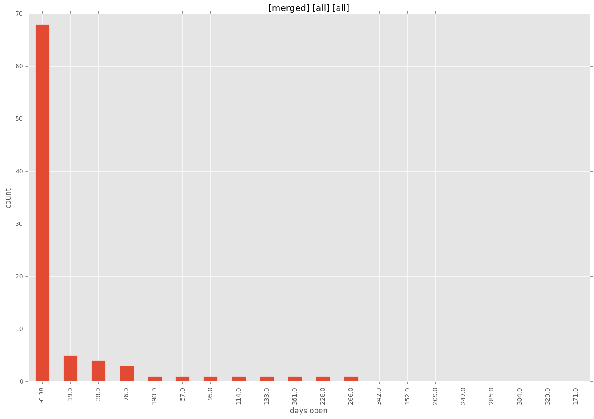
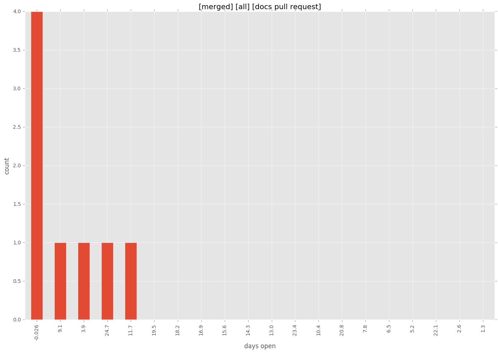

authors
- tgerla
- lwade
maintainers
- ansible
contributors
- mpdehaan : 53 commits
- jctanner : 50 commits
- willthames : 28 commits
- skvidal : 26 commits
- lwade : 24 commits
- bretmartin : 24 commits
- josephtate : 22 commits
- Geryon : 20 commits
- jimi-c : 19 commits
- robparrott : 11 commits
- ryansb : 10 commits
- hyperized : 10 commits
- sayap : 9 commits
- dxsarmit : 9 commits
- abadger : 9 commits
- Hypermanzer : 9 commits
- lightglitch : 8 commits
- tgerla : 7 commits
- halberom : 7 commits
- aioue : 7 commits
- kai11 : 6 commits
- jpmens : 6 commits
- bcoca : 6 commits
- ralph-tice : 5 commits
- radamsfc : 5 commits
- lorin : 5 commits
- jbbarth : 5 commits
- drcapulet : 5 commits
- dparalen : 5 commits
- bpennypacker : 5 commits
- amenonsen : 5 commits
- mynameisdaniil : 4 commits
- lardcanoe : 4 commits
- joelsemar : 4 commits
- jaytaylor : 4 commits
- amirhhz : 4 commits
- steenzout : 3 commits
- jlaska : 3 commits
- iljabauer : 2 commits
- gundalow : 2 commits
- gdamjan : 2 commits
- zemanel : 1 commits
- wangqiang8511 : 1 commits
- vanga : 1 commits
- techraf : 1 commits
- scottanderson42 : 1 commits
- quodlibetor : 1 commits
- mixmatch : 1 commits
- kotfic : 1 commits
- joehack3r : 1 commits
- jlund : 1 commits
- jibsheet : 1 commits
- falloutdurham : 1 commits
- erewh0n : 1 commits
- dagwieers : 1 commits
- barraponto : 1 commits
- afeinberg : 1 commits
- Yanchek99 : 1 commits
- Pallokala : 1 commits
- AndydeCleyre : 1 commits
total issue counts
unknown: 4
bugfix pull request: 111
docs report: 2
pullrequest: 203
docs pull request: 13
feature pull request: 73
feature idea: 17
issue: 71
new plugin: 1
bug report: 53
issue history

pullrequest history


days open by issue type
feature pull request
count: 85
std: 111.247941472
min: 0
max: 478
median: 27.0
mean: 74.3294117647
all
count: 328
std: 92.1324513602
min: 0
max: 708
median: 3.0
mean: 41.1554878049
pullrequest
count: 0
std: nan
min: nan
max: nan
median: nan
mean: nan
docs pull request
count: 20
std: 31.989142895
min: 0
max: 145
median: 4.0
mean: 13.4
docs report
count: 0
std: nan
min: nan
max: nan
median: nan
mean: nan
bugfix pull request
count: 162
std: 46.7129650548
min: 0
max: 265
median: 0.0
mean: 17.2037037037
feature idea
count: 11
std: 218.628826179
min: 0
max: 708
median: 79.0
mean: 177.818181818
issue
count: 0
std: nan
min: nan
max: nan
median: nan
mean: nan
new plugin
count: 1
std: nan
min: 53
max: 53
median: 53.0
mean: 53.0
bug report
count: 45
std: 103.572635909
min: 0
max: 594
median: 2.0
mean: 46.9333333333
closures grouped by total days open


 


